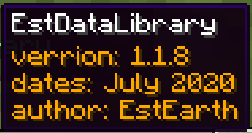
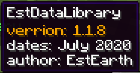
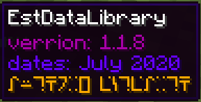
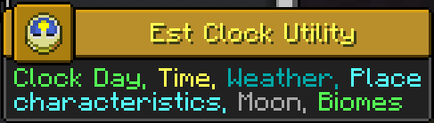

About
This page is created to introduce, teach and explain good techniques. To datapacking from my past experience in order to make develop and maintain better and easier in the future. Which everyone can adapt and apply Is one option
and not force it in any way.
And one more purpose of Tecnical advice to make it easier to follow Official Conventions make it easier to get reviews from Datapack Reviewer. This has been compiled from some of the common issues from my experiences with datapack reviews.
Tooling
This tooling is recommended by me for its datapacking convenience.
Programing
1.Install VS Code or VS Code Insider or VS Codium * I use Insider
2.Extensions
- Data-pack Helper Plus various helper functionality to navigate through datapack.
Rough preview

- language-mcfunction This extension provides a syntax highlighting more color feedback.
- tellraw preview This extension provides text preview for commands that display a message to the player.

- Comment Anchors Highlight comment and color mark
#function of theData-pack Helper Plus.

- Material Icon Theme Change icon for pretty files. This (depends on your preference.)
Setting
If you datapacking and want the code to look like this or customize it as you like. Can be set as follows.

0.Color Theme
Color Theme -> Select "Dark+ (default dark)"
1.Font
- Font Fira Code (Depending on your preference, I use this font, partly because of font ligatures
<= ->as in the picture and@is cool.) - After font download and installed, set font by going to
Setting -> Text Editor -> Font -> Font Family put Fira Code - Font Ligatures (change symbol
<=->) ->Edit in settings.json->"editor.fontLigatures": true
2.Syntax Highlighting Color
- From the previous verse, do not close the window settings.json
- You can copy and insert it (Where
,will continue from the backEditor.fontLigatures ": true) - Want to customize more here
,
"editor.semanticTokenColorCustomizations": {
"enabled": true,
"rules": {
"literal": "#ffffff",
"*.firstArgument": "#c986c4",
"*.declaration": {
"fontStyle": "italic",
},
"identity": "#f1bf74",
"operator": "#da4545",
"boolean": "#bcdf6c",
"property": "#81c0fa",
"string": "#bcdf6c",
"*.inString": {
"fontStyle": ""
},
"type": "#ff6ec3",
"variable": "#e19178",
"vector": "#00ffffde",
}
},
"workbench.colorCustomizations": {
"statusBar.background": "#16825d",
"statusBarItem.remoteBackground": "#3ea8ff"
}
3.Highlighting Commment (You can add after } in verse 2)
,
"commentAnchors.tags.list": [
{
"tag": "ANCHOR",
"iconColor": "default",
"highlightColor": "#A8C023",
"scope": "file",
"enabled": false
},
{
"tag": "TODO",
"iconColor": "blue",
"highlightColor": "#3ea8ff",
"scope": "file",
"enabled": false
},
{
"tag": "FIXME",
"iconColor": "red",
"highlightColor": "#F44336",
"scope": "file",
"enabled": false
},
{
"tag": "STUB",
"iconColor": "purple",
"highlightColor": "#BA68C8",
"scope": "file",
"enabled": false
},
{
"tag": "NOTE",
"iconColor": "orange",
"highlightColor": "#FFB300",
"scope": "file",
"enabled": false
},
{
"tag": "REVIEW",
"iconColor": "green",
"highlightColor": "#64DD17",
"scope": "file",
"enabled": false
},
{
"tag": "SECTION",
"iconColor": "blurple",
"highlightColor": "#896afc",
"scope": "file",
"behavior": "region",
"enabled": false
},
{
"tag": "LINK",
"iconColor": "#2ecc71",
"highlightColor": "#2ecc71",
"scope": "file",
"behavior": "link",
"enabled": false
},
{
"tag": "define",
"highlightColor": "#BA68C8",
"scope": "file",
"isItalic": false
},
{
"tag": "alias",
"highlightColor": "#7c6afb",
"scope": "file",
"isItalic": false,
},
{
"tag": "declare",
"highlightColor": "#d55462",
"scope": "file",
"isItalic": false,
},
{
"tag": "#>",
"highlightColor": "#A8C023",
"scope": "file",
"isItalic": false
},
{
"tag": "# @",
"highlightColor": "#469fe3",
"scope": "file",
"isItalic": false
},
{
"tag": "# ",
"highlightColor": "#2ecc71",
"scope": "file",
"isItalic": false
}
],
"commentAnchors.tags.matchCase": false,
"commentAnchors.tags.separators": [
" - ",
": ",
""
]
Note
The reason for setting such as ANCHOR, TODO, SECTION to false is because it is the default of the extension that produces the same word highlight.
Datapacking Basic
This section is for teaching how to write a data pack. To get to know and understand each part at the introductory level.
Advancement
Function
Loot table
Predicate
recipe
tag
Datapacking Basic +
In the process of maintenance.
Structure *.nbt
In the process of maintenance.
Dimension type
In the process of maintenance.
Dimension
In the process of maintenance.
World Gen
In the process of maintenance.
Resource pack basic
In the process of maintenance.
Tip n Trick
Give me tips and tricks based on my experience and use.
pack.mcmeta trick
about
It is a gimmick that you can use.
Implementation
pack.mcmeta also support JSON Text Component.
Which can be applied to Advancement too.
Type 1
{
"pack": {
"pack_format": 6,
"description": [
{
"text": "verrion: 1.1.8\n",
"color": "gold"
},
{
"text": "dates: July 2020\n"
},
{
"text": "author: EstEarth"
}
]
}
}

If you add description '': ["", { the bottom two lines will become the default color.

Type 2
{
"pack": {
"pack_format": 6,
"description": [
{
"text": "verrion: 1.1.8\n",
"color": "dark_purple"
},
{
"text": "dates: July 2020\n",
"color": "#6600ff"
},
{
"text": "author: EstEarth",
"color": "gold",
"font": "alt"
}
]
}
}

For game version 1.16+ You can use HEX color value and Custom Font with Resource pack.
Example of use for Advancement
{
"display": {
"title": {
"text": " Est Clock Utility ",
"color": "yellow"
},
"description": [
{
"text": "Clock Day, ",
"color": "green"
},
{
"text": "Time, ",
"color": "yellow"
},
{
"text": "Weather, ",
"color": "dark_aqua"
},
{
"text": "Place characteristics, ",
"color": "aqua"
},
{
"text": "Moon, ",
"color": "gray"
},
{
"text": "Biomes",
"color": "green"
}
],
"icon": {
"item": "minecraft:clock"
},
"announce_to_chat": false,
"show_toast": false
},
"parent": "global:estearth",
"criteria": {
"trigger": {
"trigger": "minecraft:tick"
}
}
}

Note
\n is for the new line. Recommend to put it behind the code pattern is more beautiful. If you put it in front of n, it will be attached to another text.
Technical Advice
This section is to give you the recommended techniques. For those who want to get certified datapack✔️ & stamp of quality💕 and little funny final comment from Datapack Reviewer EstEarth202👍 with LOL or LMAO or maybe a special comment.
This has been compiled from some of the common issues from my experiences with datapack reviews.
P.S.
I'm not saying this technique is the best, but for me, I understand how good it is.
That being said, not force, that's one of the respect I have to offer
If you can understand it, it means that I have been successful in spreading my experience.
I once thought I would stop making such suggestions. But Professor Boomber encouraged me.
Boomber: Personally, I think you should keep giving your advice. There will be someone like this sometime but most of the time your advice will be very beneficial to the datapacker. You shouldn't let one negative comment affect you.
So I keep doing it. And hope you understand what I have given you.
Datapack Namespacing
About
There are a few issues with using namespaces regarding the pack file structure and follow Datapack Advancement, this is my recommended technique.
Multiple packs
Issue: Some packs use the datapack_name as their namespace.
Sub Issue: If you follow Datapack Advancement with defines 3 advancement nodes: Root, Namespace and Datapack.
And because datapack node must not be in /data/global/advancements/folder.
Causing the need to take this file to /data/<namespace>/advancements/
It became like this /data/<datapack_name>/advancements/<datapack_name>.json
Solution
Fact: It's creator name.
data
├ <namespace> <- It doesn't make sense to set it as datapack_name.
│ ╰ advancements
│ ╰ <datapack_name>.json
├ <global>
│ ╰ advancements
│ ├ <namespace>.json <- "This is creator_head" * That's why
│ ╰ root.json
Because: If creator plan to write more datapacks, it will be very helpful when you work on workspace.

Result: <creator_name>:<datapack_name> When there are multiple packs, the name on front is to identify who created it and next it to tell what datapack it is. This will be explained further in Pack file structure
Example pack: All Boomber360's project.
Standalone pack
That means you can only do 1 pack, not do more, or combine everything in 1 pack.
Fact: Completely free with namespaces.
data
├ <namespace> <- It make sense to set it as datapack_name.
│ ╰ <...>
├ <global>
│ ╰ advancements
│ ├ standalone
│ │ ╰ <datapack_node>.json <- "This is datapack node" * That's why completely free.
│ ╰ root.json
Because: There is no more than 1 pack in your project.
Result: <datapack_name>:<every_internal_function> When there is 1 pack, which you may name it with, the creator_name and datapack_name mix or whatever. And everything under that name does not need to be identified. <datapack_name>, which makes you know exactly what this pack is, what functionality it comes from and who made it.
Example pack: The Creeper's Code
Scoreboard
Issue: Some packs use the datapack_name as their shortened namespace.
Sub Issue: Suppose the pack Bounce block uses objective as bb.var.
Do you see the problem?
What If bb is the namespace which is shortened from boomber.
That's the problem.
Advice: Use namespace shortened from your name or pen name. If possible, short 2 characters due to 16 characters limitation.
Fact: Namespace conflicts can arise. But you can avoid it as much as possible.
Because: Static namespaces that are easier to control. Making it possible to eliminate the above problems.
Result: In all possibilities, It might give you a limit to tell what the objective is doing. But if managed well, you will be able to use a common objective for many tasks, not including the long-named fake_player scoreboard. If you name the objective well, fake_player will help you here.
Did you know: fake_player doesn't need to use namespace because it is already inside the objective namespace. #ee.foo.bar ee.data
/tag
Advice: If possible, include a full name. tag @s add estearth.foo.bar
Because: It reduces the chance of conflicts from the length of the explicit name.
Storage
If let me advice, I hope this section will be useful to uninstall.
Advice: estearth:<datapack_name> ee.<path_storage_name>
Because: If you are using a Namespace, you can remove storage with a single command. Ex.: data remove storage estearth:<datapack_name> ee.
What if: If it's a standalone pack, an ex. from The Creeper's Code pack is interesting.
tcc:storage root.<path_storage>
Datapack file structure
About
For example, one of the beautiful file structures is easy to organize and group. Easy to read, develop and maintain.